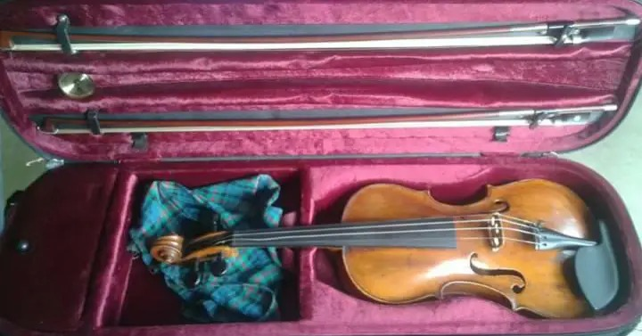
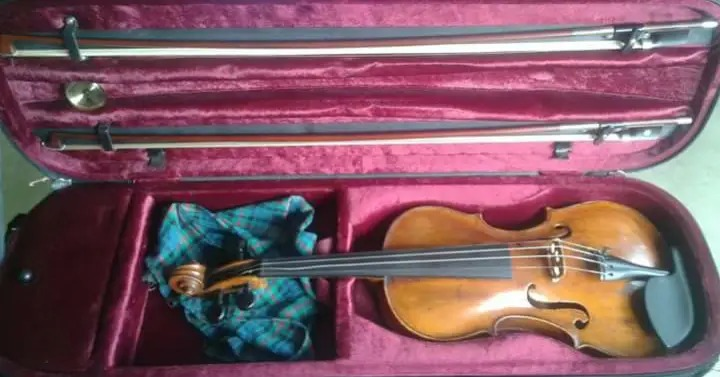

Alicia Spelberg was born into a musical family. Music played already for generations a leading role. Alicia was left with an impressive collection of music books and precious experiences with her family members and build up a life dedicated to music of her own.
She had violin lessons with Gijs van der Grinten, Manja de Waart and Leo Boelens. She did several summercourses in Dartington and with Coosje Wijzenbeek. She studied with Lotje Hertzberger at the Sweelinck conservatory in Amsterdam and with Jan Hulst at the conservatory in Rotterdam, where she passed her final exams in 1995.
Music lessons from 1989, 35+ years!
 

Already at a very young age she started giving music lessons, founding her praxis in 1989. Quickly she developed her skills not only in giving violin lessons, but also in piano, viola, quartet, music theory and arranging music. Since she was also born into a family of teachers, she was able in a very early stage to make a clear vision of how she wanted to teach. This foundation has proven to be a strong one, carrying her and her pupils up to this day.
“Her philosophy to give them music for the whole life”

After her extensive internship with Manja de Waart at Muziekschool Amsterdam at de Bachstraat, she worked some years there and in Zaandam with large groups of pupils. Her own praxis consistently grew from a part time to a fulltime job, always combining it with performing in small ensembles. She raised three boys that had music lessons with her from the age of 3 years old till adulthood. Most children stay this long, living up to her philosophy to give them music for the whole life. But she does not only teach children, she has pupils from all ages and levels. She started out with teaching adults, getting them started or moving further where they left off and the experience she made with them is very dear to her.